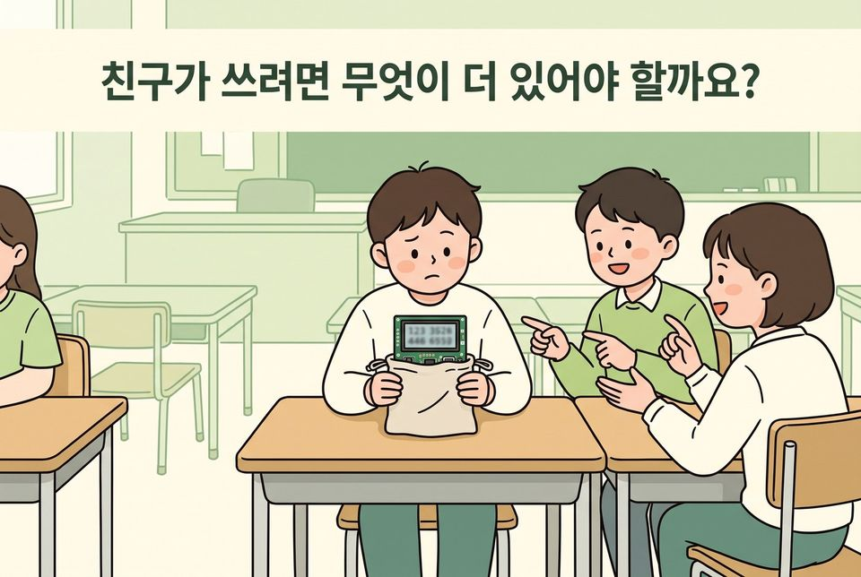
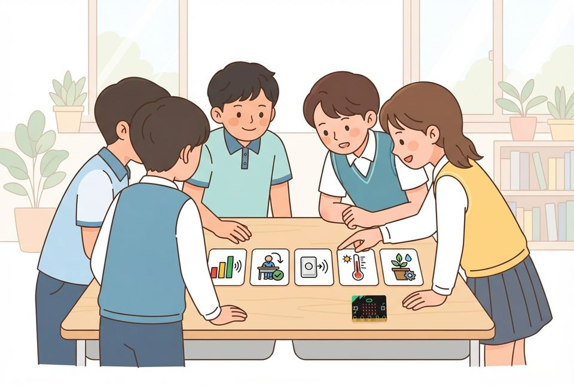
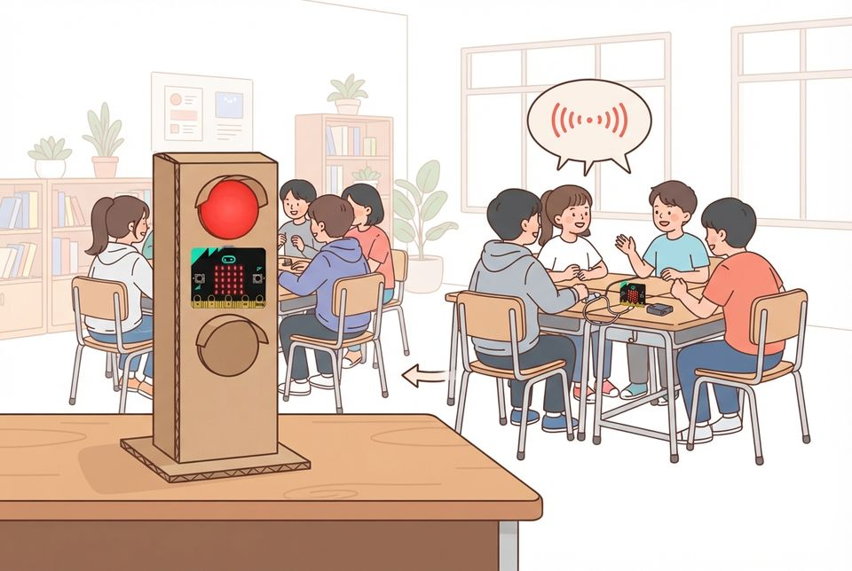
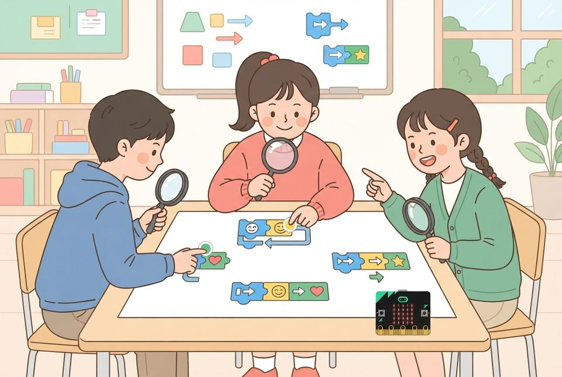
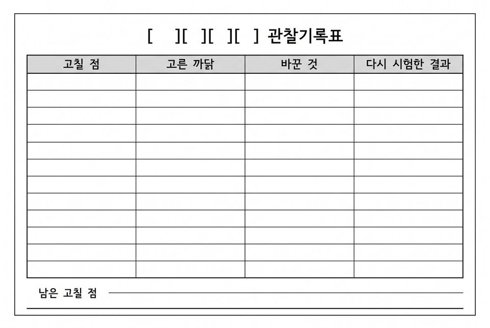

5학년 25~28차시 협력과 공유 [5실소프트웨어04-01]
송신기·수신기·안내 화면을 나누어 맡아 우리 학교 무선 도구를 만들고 서로의 코드 살펴보기
학습 문제 — 모둠이 나누어 맡아 우리 학교 문제를 푸는 무선 도구를 만들고, 서로의 코드를 살펴 고쳐 봅시다.
개요
| 성취기준 | [5실소프트웨어04-01] 친구와 역할을 나누어 프로그램을 만들고, 서로의 코드를 검토해 고친다. 사용자 시험 기록을 근거로 작품을 설명하며 공유한다. 연계 성취기준: [6실05-03], [06자율-4] |
|---|---|
| 핵심 역량 | 지식정보처리 역량, 협력적 소통 역량 |
| 핵심 기능 | ① 문제를 해결하는 기초적인 프로그래밍하기 ② 우리 학교 문제에 맞는 무선 도구를 고르고 통신 약속표 함께 쓰기 ③ 송신·수신·외형 제작·시험 역할을 나누어 맡고 교대하기 ④ 약속표의 수마다 보내고 받은 결과를 시험해 기록하기 ⑤ 세 가지 항목으로 다른 모둠의 코드를 살펴보고 고치기 |
| 가치 태도 | 프로그래밍을 통해 만든 산출물을 타인과 공유하고 협력하려는 자세 사람이 아니라 코드에 대해 근거를 들어 말하려는 자세 |
교수학습 활동
25차시 도입 동기 유발 · 학습문제 제시25차시 전개 활동1. 무선 도구 고르고 통신 약속표 쓰기 · 활동2. 역할 나누고 송신기 만들기26차시 전개 활동3. 교대하며 수신기와 안내 화면 만들기26차시 전개 활동4. 이어 붙여 처음부터 끝까지 시험하기27차시 전개 활동5. 코드 탐정 연습: 살펴볼 항목 익히기27차시 전개 활동6. 다른 모둠 무선 도구 살펴보고 전달하기28차시 전개 활동7. 모둠 안·모둠 사이 코드 리뷰로 고치고 다시 시험하기28차시 정리 배운 내용 정리 · 다음 차시 예고
25차시도입8분
동기 유발
- 3~4차시 미션 포스터를 다시 꺼내 우리 학교 문제 읽기
- 지난 무선 만보기·게임의 전송·수신으로 이 문제를 도울 수 있을지 말하기
- 미션 카드 ‘우리 학교 무선 도우미 팀’ 읽기

학습문제 제시
- 모둠이 나누어 맡아 우리 학교 문제를 푸는 무선 도구를 만들고, 서로의 코드를 살펴 고쳐 보기
준비물모둠당 마이크로비트 2대(송신기·수신기), 배터리 팩
자료3~4차시 미션 포스터, 게임 설명서, 무선 도우미 팀 미션 카드, [도입] 상황 그림
유의점자리 배치와 기기 배부 시간을 도입 시간에 포함한다.
유의점포스터 문제가 무선과 맞지 않는 모둠은 도구 후보 카드에서 가까운 것을 고르게 한다.
25차시전개32분
활동1. 무선 도구 고르고 통신 약속표 쓰기 (15분)
- 도구 후보 카드 여섯 장을 우리 문제와 이어 읽기
- 예: 교실 소음 신호등, 사용 중 알림판, 보건실 호출기, 걸음 모으기 수신판
- 우리 문제에 맞는 도구 하나를 고르고 까닭 한 줄 쓰기
- 예시가 채워진 약속표에 송신기가 보낼 수와 수신기가 보일 표시 적기

활동2. 역할 나누고 송신기 만들기 (17분)
- 송신·수신·외형 제작·시험 역할 카드를 뽑고 교대표 쓰기
- 송신 담당: [라디오 그룹 설정]과 약속표의 수를 보내는 블록 조립하기
- 예: [소리 크기 > 기준]이면 [라디오 전송: 수 1] 보내기
- 외형 담당은 틀 스케치, 시험 담당은 시험표 칸 만들기
준비물모둠당 마이크로비트 2대, USB 케이블, 배터리 팩
자료도구 후보 카드 6장, 역할 카드 4장과 교대표
자료예시가 채워진 통신 약속표(1=빨간불, 0=초록불)
유의점수업 전 MakeCode에서 [소리 크기]·[라디오 전송] 등 실제 블록 이름을 확인한다.
유의점그룹 번호는 교사가 모둠마다 배정하고, 교실 밖으로는 전송하지 않는다.
유의점기기가 부족한 모둠은 한 대 기본형(소리 크기로 그림 바꾸기)을 먼저 하고 무선은 확장형으로 둔다.
유의점3명 모둠은 시험 역할을 셋이 번갈아 맡는다.
26차시전개22분
활동3. 교대하며 수신기와 안내 화면 만들기 (22분)
- 어디까지 했는지 한 문장으로 다음 사람에게 넘겨주기
- 수신 담당: 같은 그룹 번호로 [라디오 수신하면: 받은 수] 넣기
- 약속표의 수마다 [만약]으로 다른 그림·소리 정하기
- 외형 담당: 재활용 재료로 틀을 만들고 누르는 곳·보는 곳 그림 붙이기
- 5분 타이머가 울릴 때마다 자리 바꾸고 교대표에 적기
준비물타이머, 재활용 재료(골판지·종이컵·과자 상자, 벨크로, 고무줄, 마스킹테이프)
자료모둠 통신 약속표, 교대표, 수신기 도움 카드
유의점칼과 글루건은 교사가 관리하고, 틀은 버튼·화면·마이크 구멍·배터리 스위치를 가리지 않게 만든다.
유의점소음 신호등 같은 무선 도구는 ‘정해진 규칙대로 반응만 하는 기계(인공지능 아님)’로 부른다.
유의점느린 학습자에게는 약속표 수마다 [만약]을 채운 뼈대 파일을 준다.
유의점경계 해설: 기준값 하나로 정해진 반응만 되풀이하면 인공지능이 아니고, 사람이 여러 조건을 따져 내리던 판단을 규칙으로 옮기면 규칙 기반 인공지능이다.
26차시전개18분
활동4. 이어 붙여 처음부터 끝까지 시험하기 (18분)
- 송신기와 수신기를 틀에 넣고 교실 두 곳에 떨어뜨려 두기
- 약속표의 수를 하나씩 보내고 수신 화면을 시험표에 적기
- 신호가 안 오면 그룹 번호·약속 수·전송 조건 순서로 살피기
- 맡은 부분과 시험한 경우를 각자 적어 제출하기

자료모둠 통신 약속표, 시험표
유의점결과는 화면에 뜬 그대로 적고, 뜨지 않으면 뜨지 않았다고 적게 한다.
유의점소리 시험은 짧게 하고 다른 반 수업을 방해하지 않게 한다.
유의점안내 화면에 실제 이름을 넣지 않고, 조작이 느린 학생을 재촉하지 않는다.
유의점빠른 학습자는 수신기가 받은 횟수를 세어 A 버튼으로 보여 주게 해 본다.
27차시전개20분
활동5. 코드 탐정 연습: 살펴볼 항목 익히기 (20분)
- 세 항목 알기: 그룹 번호가 같은가, 약속 수마다 표시가 있는가, 처음 쓰는 사람이 알아보는가
- 교사의 연습용 코드에 숨은 문제 세 곳을 모둠이 찾기
- 항목마다 초록(확인함)·노랑(고칠 점) 스티커 붙이기
- 사람 이름 대신 문제가 생긴 블록을 근거로 한 문장 쓰기

준비물초록·노랑 원형 스티커
자료코드 탐정 기록지, 교사가 만든 연습용 코드, 살펴볼 항목 안내표
유의점수업 전 MakeCode에서 실제 블록 이름을 확인해 연습용 코드를 만든다.
유의점살펴볼 항목 세 가지는 교사가 정하며 모둠이 바꾸지 않는다.
유의점연습용 코드는 특정 모둠의 작품이 아님을 밝힌다.
27차시전개20분
활동6. 다른 모둠 무선 도구 살펴보고 전달하기 (20분)
- 살펴볼 모둠 자리로 옮겨 도구를 써 보고 수를 하나씩 보내 보기
- 코드 화면에서 그룹 번호와 약속 수를 찾아 대조하기
- 항목마다 스티커와 근거 한 줄을 각자 써서 상대 모둠에 돌려주기
준비물초록·노랑 원형 스티커
자료코드 탐정 기록지
유의점살펴보는 동안 상대 모둠의 코드를 고치지 않게 한다.
유의점세 사람의 기록이 달라도 지우지 않고 그대로 전달하게 한다.
유의점상대 기기가 켜지지 않으면 약속표와 코드 화면으로 첫째·둘째 항목만 살피게 한다.
28차시전개33분
활동7. 모둠 안·모둠 사이 코드 리뷰로 고치고 다시 시험하기 (33분)
- 다른 모둠의 코드 탐정 기록에서 고칠 것 두 가지 고르고 까닭 적기
- 모둠 안에서 서로 맡은 코드를 세 항목으로 한 번 더 읽기
- 아직 송신·수신을 맡지 않은 사람이 조립을 이어받기
- 잘 되던 부분은 두고 고칠 곳만 바꾸기
- 고친 뒤 약속표의 수를 모두 다시 보내 결과 적기
- 고쳐도 그대로인 곳은 남은 고칠 점으로 옮겨 적기

- 내가 고친 곳과 살펴본 까닭을 개인 기록란에 적기
- 파일에 모둠 번호를 붙여 저장하고 약속표 최종본에 확인 표시하기
자료코드 탐정 기록지, 수정 기록지, [활동7] 수정 기록표
유의점모두 고치지 못해도 되며 고른 까닭과 고치지 않은 까닭을 적게 한다.
유의점전송 실패나 기기 고장을 학생의 이해 부족으로 평가하지 않는다.
유의점틀 고치기는 남는 시간에 하고, 외형의 솜씨는 평가하지 않는다.
28차시정리7분
배운 내용 정리 (5분)
- 고친 무선 도구를 모둠원 모두가 한 번씩 보내고 받아 보기
- 코드 탐정 기록 덕분에 고칠 수 있었던 곳 하나 말하기
- 나누어 만들 때 통신 약속표가 왜 필요했는지 각자 쓰기
다음 차시 예고 (2분)
- 다른 반·저학년 사용자를 초청해 써 보게 하는 한마당을 연다는 안내 듣기
- 약속표와 시험표를 챙기고 활동지를 정리해 제출하기
자료수정 기록지
유의점모둠 대표가 대신 답하지 않게 하고 각자 쓰게 한다.
유의점모둠 산출물 하나로 세 사람을 같게 평가하지 않는다.
유의점미제출은 낮은 성취가 아니라 미관찰로 따로 적는다.
평가 계획
컴퓨팅 사고력 · 협력 제작과 코드 살펴보기
맡은 부분을 통신 약속표대로 조립해 보낸 것과 받은 것을 시험해 기록하고, 세 항목에 근거를 들어 살펴본 뒤 받은 의견대로 고쳐 확인할 수 있는가?
| 수준 | 평가 기준 |
|---|---|
| 매우 잘함 | 맡은 부분(송신기·수신기·안내 화면)을 약속표대로 조립하고 약속표의 수마다 보낸 것과 받은 것을 모두 시험해 기록한다. 어떤 경우에 무엇이 떴는지를 근거로 세 항목을 살펴보고, 받은 의견대로 고친 뒤 같은 방법으로 다시 시험해 달라진 점을 개인 기록으로 설명한다. |
| 잘함 | 맡은 부분을 조립하고 약속표의 수를 모두 시험해 기록하며, 세 항목에 근거를 들어 살펴보고 받은 의견대로 고친 뒤 다시 시험해 확인한다. ※ 한 대 기본형 모둠은 입력(소리 크기)·출력(그림) 약속표를 조립·시험해 기록하고, 코드 살펴보기 뒤 고쳐 다시 시험하면 무선 없이도 ‘잘함’으로 본다. |
| 보통 | 맡은 부분은 조립하나 약속표의 수 가운데 일부만 시험했다. 또는 살펴본 근거가 ‘잘 안 된다’는 정도에 머물거나 고친 뒤 다시 시험한 기록이 빠져 있다. |
| 노력요함 | 교사가 약속표와 시험할 경우를 정해 주고 살펴볼 항목을 함께 읽어 준 뒤에도 맡은 부분을 조립하거나 근거를 적는 데 어려움이 있다. |
| 미관찰 | 결석이나 미제출로 확인하지 못한 경우. 낮은 성취로 적지 않고 따로 기록한 뒤 구술 확인 시점을 정한다. |
평가 방법 산출물 분석(통신 약속표·시험표) · 개인 기록란 확인 · 구술 확인
연동 도구·링크
과정안에 나오는 도구가 저절로 걸립니다. 수업 전에 학교망에서 열리는지, 블록·메뉴 이름이 바뀌지 않았는지 확인하세요.
MakeCode (micro:bit) ↗마이크로비트 블록 코딩·시뮬레이터·무선(라디오)계정: 필요 없음라디오 블록 설명 ↗MakeCode (micro:bit) 안내마이크로비트 V2 ↗LED·버튼·가속도·소리 센서, 무선 통신계정: 필요 없음MakeCode 라디오 블록 ↗송신기·수신기
내 수업 링크
학급 패들렛, 엔트리 작품, 활동지 주소처럼 이 차시에 쓸 링크를 걸어 둡니다. 이 브라우저에만 저장되고 밖으로 보내지 않습니다. 학생 이름이 든 주소는 넣지 마세요.